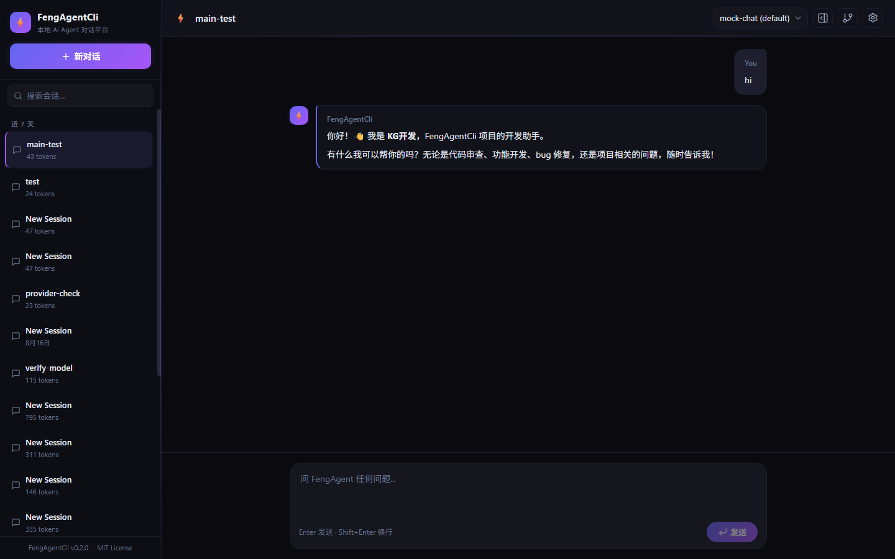
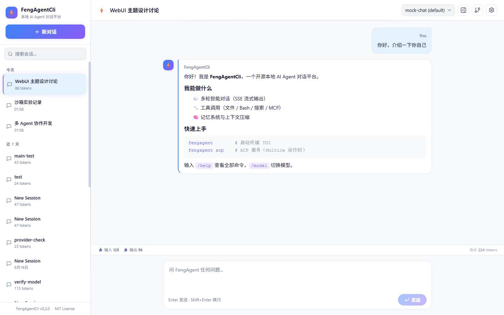
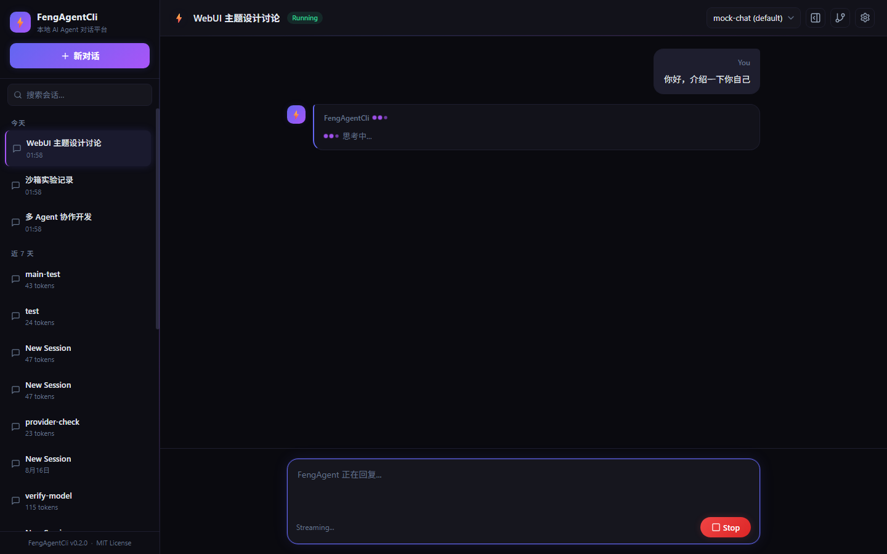
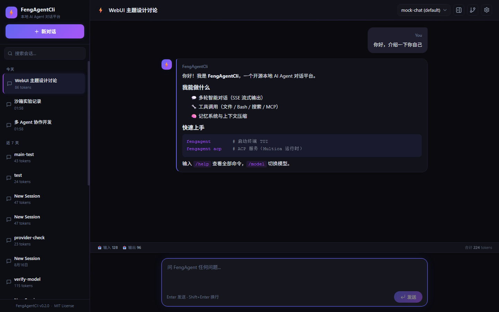
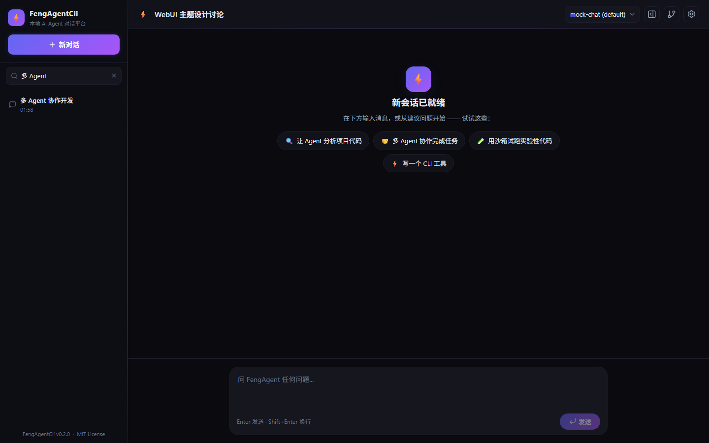
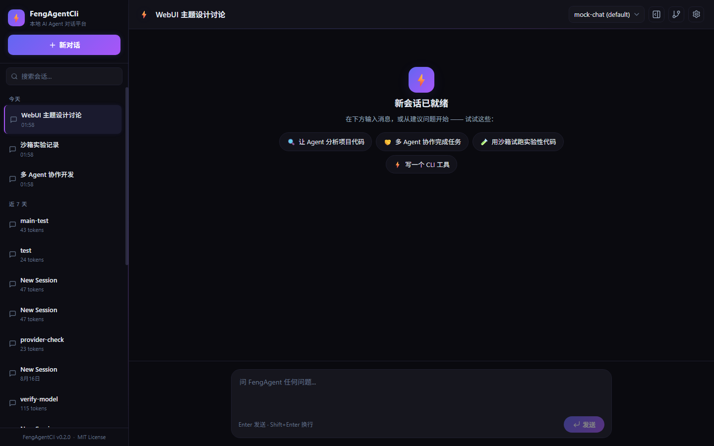
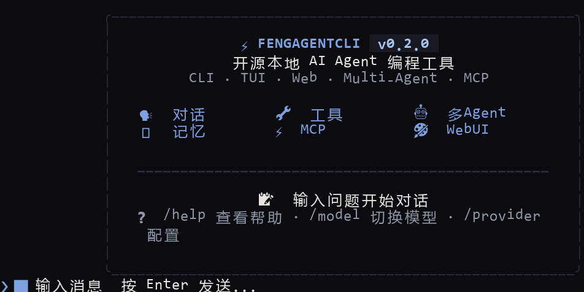
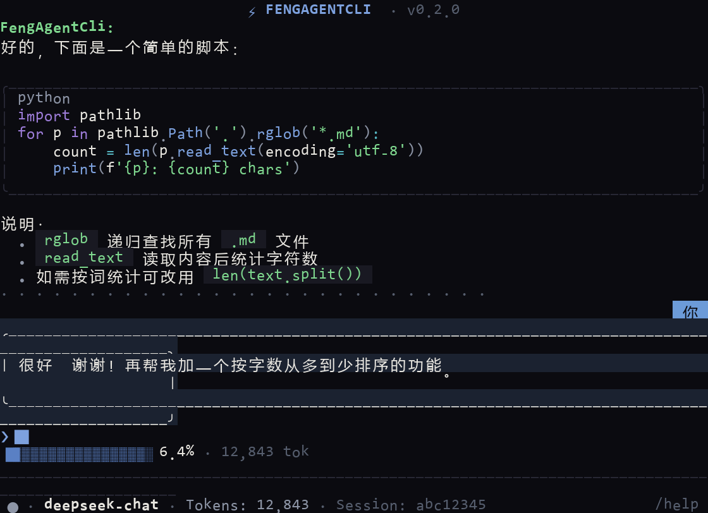
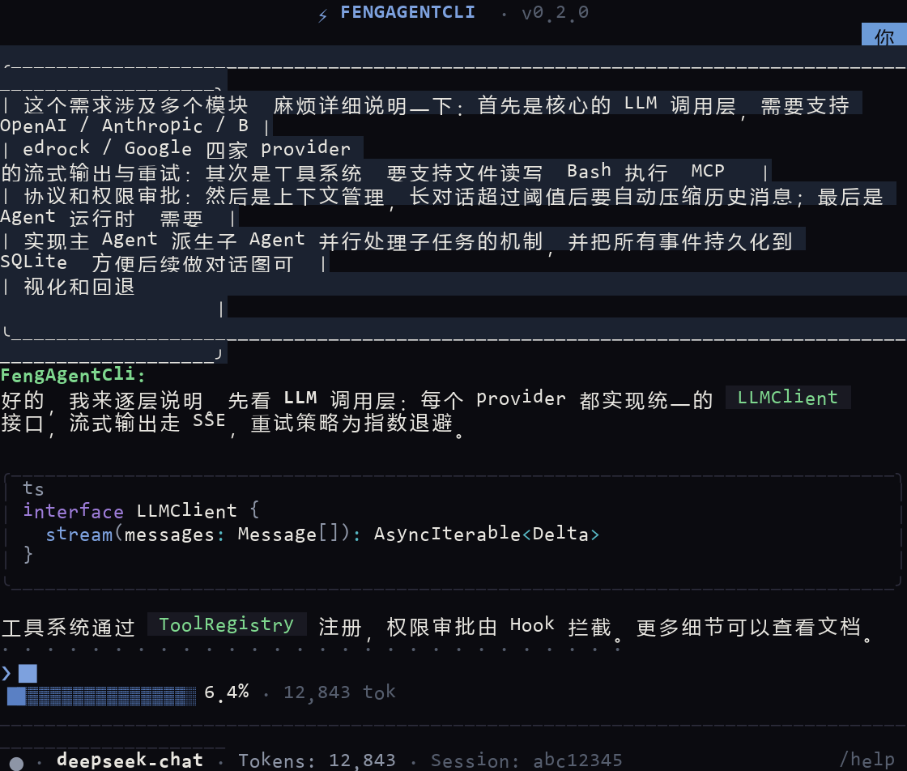

refactor/cordis-graph-architecture（Cordis 插件化 + 对话图/可回溯 + 事件溯源架构，Phase 1–4 已完成：CLI 经 createRuntime 装配、Server/WebUI 接 ctx.storage/ctx.graph、/rollback + /graph + 分支可视化；Phase 0 数据隔离已定稿：数据根 .fengagent-cordis/ + 单向幂等导入 + 事件溯源类型；Phase 3 事件导出/导入/重建/跨数据根迁移已落地）。
👶 小白用户请直接看 📖 新手手册（保姆级可照抄命令），完整手册见 docs/GUIDE-CORDIS.md。老分支
main 保持独立可 checkout / 编译 / 运行，功能不回归；两分支同机运行数据互不干扰（数据根隔离 + 只读导入），差异与隔离方式见
docs/ARCHITECTURE-CORDIS.md §6–§7。
老分支 main（数据目录 .fengagent/）的保姆级手册见
main 分支 GUIDE.md — 两分支功能/命令/数据目录互不通用，请勿混用。
FengAgentCli
开源本地 AI Agent CLI 工具 — 在终端或浏览器中与 AI 对话，支持工具调用、多 Agent 协作、上下文压缩与权限审批。
特性亮点
FENG_PROVIDER 环境变量切换。
快速开始
从零开始，几分钟内跑起你的第一个 AI Agent 对话。
环境要求与安装
需要 Bun >= 1.3.0 和至少一个 LLM API Key。
git clone https://github.com/zhu011/FengAgentCli.git
cd FengAgentCli
bun install配置 API Key
选择一个 LLM 提供商，设置对应的环境变量：
export FENG_PROVIDER=anthropic
export ANTHROPIC_API_KEY=sk-ant-...export FENG_PROVIDER=openai
export OPENAI_API_KEY=sk-...export FENG_PROVIDER=openai-compatible
export OPENAI_COMPATIBLE_API_KEY=...
export OPENAI_COMPATIBLE_BASE_URL=https://your-endpoint/v1export FENG_PROVIDER=google
export GOOGLE_API_KEY=...CLI 模式
bun run packages/cli/src/entry.tsecho "解释这段代码" | bun run packages/cli/src/entry.tsbun run packages/cli/src/entry.ts --model claude-sonnet-4-20250514
bun run packages/cli/src/entry.ts --session <session-id>全局安装（任意目录启动 TUI）
安装后无需进入项目目录，任意位置直接运行 fengagent 即可进入 TUI 交互界面。
npm install -g fengagent
fengagent # 任意目录直接进入 TUI本地打包安装：bun run pack 后 npm install -g ./fengagent-0.2.0.tgz；fengagent runtime install 可注册为 Multica 本地运行时。
WebUI 模式
bun run serve
# 浏览器访问 http://127.0.0.1:3000bash scripts/demo.sh # Linux/macOS
powershell -ExecutionPolicy Bypass -File scripts/demo.ps1 # Windows开发模式
同时启动后端 server 和前端 Vite dev server（支持热更新）：
bun run dev
# 后端 Server: http://127.0.0.1:3000
# 前端 WebUI: http://localhost:5180（Vite dev，自动代理 /api 到后端）界面预览
Round 3 实拍：WebUI（深空 / 日光 / 赛博三套主题）与 TUI（终端对话）界面。
WebUI 欢迎页（深空）与建议卡片






TUI 终端界面



新手手册（cordis 分支保姆级）
照抄命令即可跑通。完整版（含每个命令的预期输出与截图）见 docs/GUIDE-CORDIS.md。
斜杠命令 + / 联想
在 CLI 交互界面（bun run packages/cli/src/entry.ts）里输入 / 即可弹出命令补全列表（按前缀过滤，↑↓ 选择，Tab/Enter 补全，Esc 关闭）。常用命令：
| 命令 | 作用 | 示例 |
|---|---|---|
/provider show / set | 查看 / 配置 Provider（apiKey 打码、热加载免重启） | /provider set openai-compatible --api-key sk-xxx --base-url https://api.deepseek.com --model deepseek-chat |
/model list / <id> | 列出 / 切换模型（持久化 + 热加载） | /model deepseek-reasoner |
/graph | 查看对话图（节点 / 活跃路径 / 溯源链） | /graph |
/rollback [节点id] | 回退到父节点并重答（旧分支保留） | /rollback |
/compact | 手动压缩上下文 | /compact |
/clear [context] | 清屏 / 清空上下文 | /clear context |
/restore | 从存储恢复会话历史 | /restore |
/session new|list|switch | 会话管理 | /session list |
/export [file] | 导出会话为 Markdown | /export chat.md |
/tool list | 列出已注册工具 | /tool list |
配置写入位置：/model、/provider 持久化到分支级
.fengagent-cordis/config.json（不影响 main 的 .fengagent/config.json），重启自动加载、立即生效。
对话图 /graph 与回退 /rollback
每轮「用户提问 → 助手回答」沉淀为图节点（user / assistant / tool / branch-point），可完整溯源。
聊过一轮后输入 /graph 查看；回答不满意时 /rollback 回退到最近一次回答
（或 /rollback <节点id> 回退到指定节点），自动截断并重答，旧分支作废保留。
对话图节点 (3) — 活跃路径 2 个节点:
🧑 5fb984ec-3ea type=user msg=05f75336 (active)
🤖 5fb984ec-3ea type=assistant msg=a2d20d86 (rolled-back)
🔀 5fb984ec-3ea type=branch-point msg=05f75336 ← head
溯源链 (2): 5fb984ec → 5fb984ec
提示: /rollback <节点id> 回退到该节点的父节点并重答（旧分支保留可溯源）。WebUI 侧有可视化图面板（节点树 + 活跃高亮 + 回退按钮 + 作废分支灰显），对话、回退、图三者实时联动。
事件溯源（导出 / 导入 / 重建 / 跨数据根迁移）
事件日志位于 .fengagent-cordis/events/{sessionId}.jsonl（append-only，seq + sha-256 hash 链，可查篡改、崩溃自愈）。
仓库内置迁移 CLI，照抄即可：
bun run scripts/events-migrate.ts list # 列出有事件日志的会话
bun run scripts/events-migrate.ts verify # 事件链校验 + 双写对账（投影 === SQLite）
bun run scripts/events-migrate.ts export --dir ./export # 整库导出（每会话一个 .fengevents.jsonl，机器无关）
bun run scripts/events-migrate.ts import ./export # 导入可移植事件文件（幂等去重）
bun run scripts/events-migrate.ts rebuild [--prune] # 以事件为准重建读模型跨数据根 / 跨机迁移：源根 export → 拷贝目录 → 新根
import → rebuild → verify（全绿即迁移成功，新根可继续写事件、seq 无缝续接）。
分支隔离（main ↔ cordis）
| 数据 | main | cordis（本分支） |
|---|---|---|
| 会话库 | .fengagent/sessions.db | .fengagent-cordis/sessions.db |
| 对话图 | .fengagent/graph.jsonl | .fengagent-cordis/graph.jsonl |
| 事件日志 | 无 | .fengagent-cordis/events/*.jsonl |
| 日志 / 记忆 / 配置 | .fengagent/logs|memory|config.json | .fengagent-cordis/… |
数据根解析：FENG_DATA_DIR > 配置 dataDir > 默认 <项目根>/.fengagent-cordis。
首次运行把 main 遗留数据只读、一次性、幂等导入（写 import.marker），绝不写回 main；
切回 main 分支数据原样保留，删掉 .fengagent-cordis/ 即彻底回归。
配置
所有配置通过 FENG_* 环境变量或 JSON 配置文件设置。优先级：环境变量 > 项目配置 > 全局配置 > 默认值。
环境变量
| 变量 | 默认值 | 说明 |
|---|---|---|
FENG_MODEL | claude-sonnet-4-20250514 | 主模型 ID |
FENG_SMALL_MODEL | claude-haiku-3 | 小模型（压缩/摘要用） |
FENG_PROVIDER | anthropic | LLM 提供商 |
FENG_MAX_TOKENS | 8192 | 单次生成最大 token 数 |
FENG_TEMPERATURE | 1.0 | 生成温度（0–2） |
FENG_CONTEXT_WINDOW | 200000 | 上下文窗口大小（token） |
FENG_COMPACT_THRESHOLD | 0.85 | 压缩触发阈值（占窗口比例） |
FENG_COMPACT_KEEP_TOKENS | 8000 | 压缩后保留的近期 token 数 |
FENG_DISABLE_COMPACT | false | 禁用上下文压缩 |
FENG_AUTO_APPROVE_TOOLS | false | 自动批准工具调用（跳过审批） |
FENG_ALLOWED_TOOLS | * | 允许的工具列表（逗号分隔） |
FENG_DENIED_TOOLS | — | 禁止的工具列表（逗号分隔） |
FENG_BASH_TIMEOUT | 120000 | Bash 命令超时（毫秒） |
FENG_MAX_TURNS | 50 | Agent 循环最大轮次 |
FENG_SERVER_PORT | 3000 | HTTP 服务端口 |
FENG_SERVER_HOST | 127.0.0.1 | 服务监听地址 |
FENG_CORS_ORIGIN | * | CORS 允许来源 |
FENG_LOG_LEVEL | info | 日志级别（debug/info/warn/error） |
FENG_DATA_DIR | .fengagent-cordis | 数据根（会话/事件/图/日志/记忆落盘目录；main 的 .fengagent 只读回退） |
FENG_MAIN_DATA_DIR | — | 显式指定 main 遗留数据根（首次运行导入源）。探测顺序：FENG_MAIN_DATA_DIR → <workdir>/.fengagent → ~/.fengagent → <workdir>/data |
config.json 配置文件
除了环境变量，还支持 JSON 配置文件：
~/.fengagent/config.json./.fengagent/config.json{
"model": "claude-sonnet-4-20250514",
"smallModel": "claude-haiku-3",
"provider": "anthropic",
"maxTokens": 8192,
"temperature": 1.0,
"contextWindow": 200000,
"compactThreshold": 0.85,
"compactKeepTokens": 8000,
"disableCompact": false,
"autoApproveTools": false,
"allowedTools": "*",
"bashTimeout": 120000,
"maxTurns": 50,
"logLevel": "info"
}权限规则（permissions.json）
在 .fengagent/permissions.json 中定义细粒度权限规则：
{
"rules": [
{ "tool": "bash", "action": "ask", "reason": "Shell commands require approval" },
{ "tool": "file-write", "action": "ask" },
{ "tool": "file-edit", "action": "ask" },
{ "tool": "task", "action": "ask" },
{ "tool": "*", "action": "allow" }
],
"cache": true
}| Action | 说明 |
|---|---|
allow | 自动批准 |
deny | 自动拒绝 |
ask | 询问用户（CLI 弹框 / WebUI SSE 推送） |
MCP Server 配置
在 .fengagent/mcp-servers.json 中配置 Model Context Protocol 服务器：
{
"servers": {
"filesystem": {
"command": "npx",
"args": ["-y", "@modelcontextprotocol/server-filesystem", "/path/to/dir"],
"env": {}
},
"github": {
"command": "npx",
"args": ["-y", "@modelcontextprotocol/server-github"],
"env": {
"GITHUB_PERSONAL_ACCESS_TOKEN": "ghp_..."
}
}
}
}或通过环境变量 FENG_MCP_SERVERS（JSON 格式）配置。
核心特性
深入了解 FengAgentCli 的核心能力。
对话系统
支持多轮上下文对话，通过 SSE（Server-Sent Events）实现流式输出。CLI 模式使用 Ink TUI 渲染，WebUI 模式使用 React + Markdown 渲染。TUI 采用近黑分层背景 + 暖橙/语义色设计语言：标题卡片、消息列表、输入框、工具卡片、权限对话框视觉统一；长对话切片渲染支持 PgUp/PgDn、鼠标滚轮、Home 回顶、End 回底；状态栏为独立一行分段 token 进度条（精确百分比：1 位小数、极小值 <0.1%、≥85% 警告色）+ 模型/会话信息；AI 思考/运行时显示逐帧循环动态图标（SpinnerGlyph 星形/月亮/跑马灯帧序列 + 宠物 emoji 轮播）。
思考过程可视化（Round 4）
使用推理模型（如 DeepSeek reasoner / Anthropic thinking）时，思考过程不再「干等」：
- 流式显示 — 思考内容（
reasoning_content/thinking_delta）经thinking-deltaSSE 事件实时推送；WebUI 以「💭 深度思考」面板流式展示，TUI 以缩进斜体实时输出 - 点击展开 / 折叠 — WebUI 点击面板标题切换展开 / 折叠（流式期间自动展开一次，之后交还用户控制；折叠后仍显示字数摘要与流式指示）
- 历史可见 — 会话重载 / 恢复时，历史消息的 thinking 块照常渲染（WebUI 面板 + TUI 💭 块）
- 链路说明 — 沙箱（实验代码隔离执行）不在 SSE 流式链路上、不会丢思考 token；此前「一直停在深度思考」的根因是应用层未解析
reasoning_content/ 未转发thinking-delta，Round 4 已自 LLM Provider → Agent 事件 → WebUI/TUI 全链路修复
多 Agent 协作
通过 Task 工具派遣子 Agent，支持独立 Session 和角色定义。在 .fengagent/agents/*.md 中创建 Agent 定义文件：
---
name: code-reviewer
description: 代码审查专家
model: claude-sonnet-4-20250514
tools:
- file-read
- grep
- glob
max_turns: 20
---
你是一个代码审查专家。你的职责：
1. 阅读代码并识别潜在 bug
2. 检查代码风格和最佳实践
3. 提出改进建议工具调用
内置工具系统，支持文件操作、Shell 命令、搜索和更多：
| 工具 | 说明 |
|---|---|
file-read | 读取文本文件（自动检测编码） |
file-write | 写入/创建文件 |
file-edit | 精确替换文件内容 |
bash | 执行 Shell 命令（带超时控制） |
glob | 文件模式匹配搜索 |
grep | 正则表达式内容搜索 |
task | 派遣子 Agent 执行任务 |
memory | 记忆读写（MEMORY.md + 向量检索） |
skill | 调用已注册的 Skill 模板 |
WebUI
React + Vite + TailwindCSS 构建的本地网页界面（参考 DeepSeek / 豆包 / 通义千问设计语言），内置 3 套主题（深空 / 日光 / 赛博）。通过 SSE 实现流式推送，支持权限审批交互。
- 实时对话 — SSE 流式输出，Markdown 渲染；发送后显示「生成中」动画指示器（豆包式彩色光点）
- 会话管理 — 创建、切换、导出、删除会话；侧边栏 / 顶栏标题「双击重命名」
- 设置下拉 — 顶栏齿轮菜单：主题切换（显示主题名）+ 检查器 / 对话图面板开关
- 对话图面板 — 节点树 + 活跃高亮 + 回退按钮 + 作废分支灰显保留（cordis 分支，三套主题自适应）
- Token / KV Cache 统计栏 — 实时显示输入/输出/缓存命中/命中率（cordis 分支）
- 权限审批 — 工具执行前的交互式确认
对话图与回退（Graph / Rollback，cordis 分支）
每轮「用户提问 → 助手回答」沉淀为对话图节点（user / assistant / tool / branch-point），节点记录
模型、工具调用、token、质量标记，可完整溯源。回答不满意可 /rollback 回退到父节点自动重答，
旧分支作废但保留（可审计），新回答从分支点长出。CLI 用 /graph 查看，WebUI 用图面板可视化。
图数据由事件日志投影派生（.fengagent-cordis/graph.jsonl 为派生视图），重启可恢复。
Token 与 KV Cache 统计（cordis 分支）
每次 LLM 调用回带用量：输入/输出 token + KV Cache 读取/创建 token（DeepSeek 等厂商返回）。
WebUI 统计栏实时累计：📥 输入 · 📤 输出 · ⚡ 缓存命中 · 🎯 命中率 · 合计 tokens；
命中率 = 缓存读取 / (缓存读取 + 非缓存输入)。完整 usage 同时写入
.fengagent-cordis/logs/llm-trace-{date}.jsonl 供测评模块分析，数据来源科学可溯源。
上下文压缩
在接近上下文窗口阈值时自动触发压缩，核心算法：
- 工具结果裁剪 — 超过阈值的旧工具结果替换为占位符（非 LLM 操作，减少 token）
- 分割点优化 — 不在 tool-result 消息边界切割（防止孤儿 tool-call）
- 结构化摘要 — 目标 / 约束 / 进展 / 关键决策 / 下一步 / 关键上下文 / 相关文件
- 迭代更新 — 有前次摘要时传入更新而非从头生成
- 文件操作追踪 — 从消息中提取已读/已改文件，附加到摘要
记忆系统
| 类型 | 路径 | 说明 |
|---|---|---|
| MEMORY.md | MEMORY.md 或 .fengagent/memory/MEMORY.md | 主记忆文件（注入系统提示） |
| 分类记忆 | .fengagent/memory/*.md | 按分类存储的记忆文件 |
| 向量记忆 | .fengagent/memory/vector-store.json | TF-IDF 向量化记忆（持久化到 JSON） |
日志系统
内置分级日志系统（@fengagent/shared/logger），server 和 CLI 共用，自动落盘。
| 文件 | 格式 | 内容 |
|---|---|---|
fengagent-{date}.log | 文本 | 运行日志（时间戳 + 模块 + 函数名 + 消息） |
sessions-{date}.jsonl | JSONL | 会话消息日志（含 sessionId/role/content/model/toolCalls） |
llm-trace-{date}.jsonl | JSONL | LLM 请求/回复轨迹（供 eval 模块分析） |
所有日志文件位于 <数据根>/logs/（本分支默认 .fengagent-cordis/logs/）。
会话持久化使用 SQLite（.fengagent-cordis/sessions.db）作为读模型 + 事件日志
.fengagent-cordis/events/*.jsonl 作为事实源（双写，事件为准）。
Agent 测评
内置 Agent 测评模块，自动记录 LLM 请求/回复轨迹并生成分析报告：
- LLM 调用次数、总耗时、平均耗时
- Token 用量分布（输入/输出）
- KV Cache 读取/创建 Token 与命中率
- 工具调用率、工具使用分布
- 完成原因分布（end_turn / tool_use）
- 错误率、错误详情
- 模型准确率对比表（不同模型/提示词横向对比）
- 每个会话的完整轨迹
- 优化建议（工具描述、提示词、模型选择）
bun run eval # 分析今天的日志
bun run eval --date=2026-08-16 # 分析指定日期
bun run eval --all # 分析全部日志
bun run eval --file=.fengagent-cordis/logs/llm-trace-2026-08-16.jsonl # 指定文件
bun run eval --exclude-model=test-model,custom-model # 排除 mock 模型
bun run eval --optimize # 评测 + 自优化诊断（输出调优建议）报告输出到 <数据根>/logs/eval-report-{date}.md；自优化建议输出到
<数据根>/optimizations/optimization-{date}.md。
观测面板（WebUI）：顶栏「📡 观测」页——日期切换 + 汇总指标卡 + 调用链树（会话→消息→LLM 调用→工具调用四层展开 / 折叠，节点显示 模型、耗时、输入/输出 token、KV cache、完成原因，工具节点显示参数 JSON、返回结果、 成功/失败）+ 指标图表（模型对比 / 工具分布 / 完成原因）。
评测模块（WebUI）：顶栏「🧪 评测」页——测试集管理
（<数据根>/testsets/*.json，AgentBench / DeepEval 风格）、评测报告与
自优化建议浏览（Markdown 渲染）+ 导出。
LLM-judge 评测：评测引擎可对 trace 会话做完成度 / 正确性打分 （分数 0-100），结论枚举 completed / partial / failed / tool_misused / unsafe / inefficient；判定结果合并进分析结果后，自优化诊断将据此生成归因建议（工具误用 → 工具描述，安全风险 → 零容忍，详见 docs/EVALUATION.md）。
每轮对话深链（聊天 → 观测/评测）：聊天页每条消息右侧「查看调用链」/
「查看评测」按钮，按每轮对话粒度跳转到观测/评测页——deep-link
?view=observability|eval&sessionId=X&messageId=Y 自动定位日期 / 会话 /
消息并展开调用链或评测结果（用户消息自动解析到其后助手轮次，工具循环多步全部纳入）；
会话列表每个会话行另有「查看观测 / 查看评测」入口，跳转后经消息选择器点选任意一轮。
服务端 per-message API：/api/observability/traces/:date/callchain?sessionId&messageId
（该轮次过滤调用链 + focus 解析）、/api/observability/traces/:date/messages?sessionId
（消息粒度摘要）、/api/eval/messages/:date?sessionId&messageId（单条消息评测，
trace 指标 + LLM-judge 扩展点）。旧日志无 messageId 时自动按文本匹配回退。
命令参考
CLI 命令行参数和 TUI 交互命令一览。
CLI 命令
feng [选项] [提示文本]
feng serve [选项]
feng acp [选项]| 参数 | 说明 |
|---|---|
-m, --model <id> | 指定模型 ID |
-p, --port <n> | 服务端口（默认: 3000） |
-s, --session <id> | 恢复已有会话 |
--print | 强制非交互模式（输出到 stdout） |
-h, --help | 显示帮助 |
-v, --version | 显示版本 |
serve | 启动 WebUI 服务模式 |
acp | 启动 ACP 服务模式（Multica 运行时集成） |
feng "帮我读取 package.json"
feng --model claude-sonnet-4-20250514 "解释这段代码"
feng --session abc-123 "继续上次对话"
echo "修复这个 bug" | feng
feng serve --port 8080TUI 交互命令
在 CLI 交互模式中，输入以下命令执行操作：
| 命令 | 说明 |
|---|---|
/help | 显示帮助 |
/exit · /quit | 退出 |
/clear | 清屏 |
/clear context | 清空当前会话上下文（会话 ID 保留，可用 /restore 恢复） |
/compact | 手动压缩上下文 |
/restore | 从存储恢复会话历史 |
/session new [title] | 新建会话 |
/session list | 列出所有会话 |
/session switch <id> | 切换到指定会话 |
/tool list | 列出已注册工具 |
/model <id> | 切换模型（持久化并立即生效，后续对话真实走新模型） |
/model list | 列出当前 Provider 实际可用/已配置的模型（openai-compatible 拉取服务端真实目录） |
/provider show · /provider set <type> | 查看/配置 Provider（apiKey 自动打码） |
/export [file] | 导出当前会话为 Markdown |
/graph | 查看对话图：节点 / 分支 / 活跃路径 / 溯源链（refactor 分支特性） |
/rollback [节点id] | 回退到父节点并自动重答，旧分支作废但保留可溯源（refactor 分支特性） |
/ 联想（命令补全）：输入 / 或 /+前缀，输入框上方弹出命令补全列表（按命令名前缀或描述过滤）；↑↓ 选择，Tab/Enter 补全，Esc 关闭，列表可滚动（带「↑ 还有 N 个命令」指示）。
Eval 命令
# 分析今天的日志
bun run eval
# 分析指定日期
bun run eval --date=2026-08-13
# 分析所有日志
bun run eval --all
# 分析指定文件
bun run eval --file=.fengagent-cordis/logs/llm-trace-2026-08-13.jsonl
# 排除 mock 模型（如测试用 test-model）
bun run eval --date=2026-08-16 --exclude-model=test-model,custom-model
# 评测 + 自优化诊断（基于评测结果自动生成调优建议）
bun run eval --optimizeAPI 文档
HTTP API 端点，所有路径以 /api 为前缀。服务默认监听 127.0.0.1:3000。
HTTP 端点
| 方法 | 路径 | 说明 |
|---|---|---|
| GET | /api/health |
健康检查，返回 { status: "ok" } |
| POST | /api/sessions |
创建会话，返回 Session 对象 |
| GET | /api/sessions |
列出所有会话 |
| GET | /api/sessions/:id |
获取会话详情 |
| POST | /api/sessions/:id/messages |
发送消息，返回 SSE 流 |
| POST | /api/sessions/:id/interrupt |
中断当前运行 |
| GET | /api/sessions/:id/permissions |
获取待处理权限请求列表 |
| POST | /api/sessions/:id/permissions/:reqId |
提交权限响应（allow / deny） |
| GET | /api/sessions/:id/export |
导出会话为 JSON 文件 |
| DELETE | /api/sessions/:id |
销毁会话 |
| GET | /api/models |
获取可用模型列表 |
SSE 事件类型
POST /api/sessions/:id/messages 返回 SSE 流，事件类型包括（Round 4 起思考过程以 thinking-delta 实时推送）：
| 事件 | 说明 |
|---|---|
session-start | 会话信息（tokenCount 等） |
message-start | 助手消息开始（携带 messageId） |
thinking-delta | 思考过程内容增量（DeepSeek reasoner 的 reasoning_content / Anthropic thinking_delta），WebUI/TUI 流式展示、可展开折叠 |
text-delta | 正式回答文本增量 |
tool-call-start / tool-call-result | 工具调用开始 / 结果 |
usage | token 用量（含 KV cache 命中） |
message-end | 助手消息结束 |
turn-end | 一轮对话结束 |
error | 错误事件 |
# 1. 创建会话
curl -X POST http://127.0.0.1:3000/api/sessions \
-H "Content-Type: application/json" \
-d '{"title": "测试会话"}'
# 2. 发送消息（返回 SSE 流）
curl -N -X POST http://127.0.0.1:3000/api/sessions/{id}/messages \
-H "Content-Type: application/json" \
-d '{"content": "你好"}'/api 请求到后端，无需额外配置 CORS。